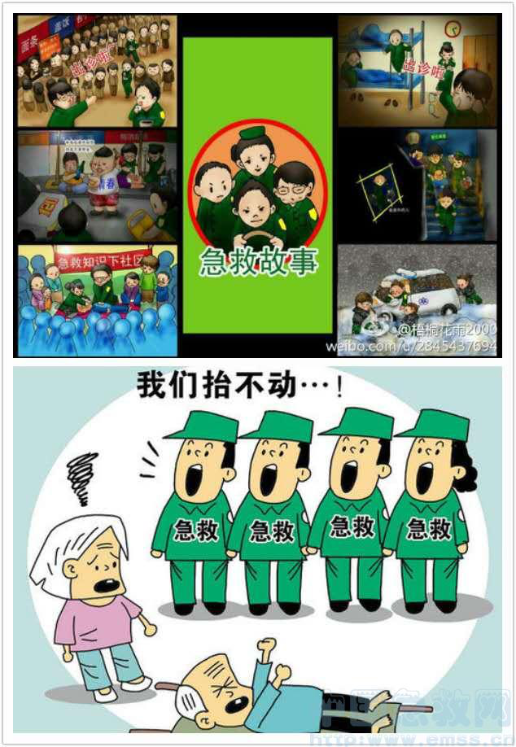

最近，两起急救事件引发公众关注：一是一位知名媒体人在北京地铁站突发心脏病，因地铁站没有配备抢救病人的AED （自动体外心脏除颤器），虽有乘客上前施救仍无力回天；二是北京一位80多岁的老人在家中发病，急救人员赶到后要求家属找人抬病人下楼，导致病人错过最佳治疗时间，事后北京120急救中心相关负责人表示“相关规定中医生没有抬担架的义务，整个过程没有违规”。
两起事件照见的正是当前急救中的“短板”：公共场所缺少急救设备，或者虽然配备了设备关键时刻却无人会用、无人敢用，缺乏基本急救常识、不会正确实施急救是公众急救的普遍问题；不缺设备和技术的专业急救，却在谁来抬病人这个简单环节上掉了链子，反映出专业急救在一定程度上投入不足、人员缺乏、管理滞后。人们常说“让专业的人干专业的事”，效率更高、效果更好，通常情况下如此，但现实千变万化，不是所有的事都碰巧能由专业的人去干，也不是专业的人不需要配合就能把事干好，倘若遇到以上两种本可防范的风险或其它意外，该如何厘清责任、规范保障以利于自救或救人，值得从长计议。
急救这种专业的事需要大力普及，让不专业的人也能救急。急救不仅关乎设备，更是一种责任意识，即由现场目击者最早进行有效急救的意识。正确使用急救设备的前提，无疑是普及基本的急救知识、掌握急救技能。在我国，由于种种原因，公众急救方面的培训能力和效果都很低，比如认为“AED只限专业人士使用”就是一大误区。实际上，AED操作较为简单，接受几十分钟的培训就能学会，去年8月也发生过一起一位乘客在首都机场心脏骤停，AED近在咫尺却无人会用而错失救命良机的事件。一位急救培训人士坦言，尽管组织了针对学校、企事业单位的常态化培训，但感觉 “不重视、不认真、学了就忘”。如何完善急救普及培训机制、调动公众学习急救知识的热情，值得相关部门好好思考；老百姓也不能因为这不是自己的专业或自己不会遇上这种倒霉事儿就敷衍塞责。急救不能局限于“让专业的人干专业的事”，而应该成为“人人都能干的基本的事”，走出“专业”误区，才谈得上大部分人愿意学、学得会、用得上。再说到抬担架，这活算不算 “专业”，医生应不应该干？有人觉得应该，因为抬担架不仅仅是个体力活，还得有技巧、有经验，才能防止对病人产生二次伤害；有人觉得大可不必，虽得有技巧经验也远没到“专业”份上，实际情况中很多家属负责抬担架就是明证。抬担架就算不是什么“专业”，总得有人干，是让专门的人干，还是随机而变？可见，让谁抬担架才是“专业的事”，考验的是管理能力。急救，情势是“急”，目的是“救”。如果急救中心声称医生的职责只是救治病人，没有抬担架的义务，一则难免让公众认为其推诿责任、没有职业道德，二则也显得管理能力低下，程序衔接不畅，结果让专业的人也干不好专业的事。反之，如果急救中心把让谁抬担架当成 “专业的事”，不是找不到办法：配备足够的担架员，实行有偿服务行不行？医生、司机兼任担架员给予一定补贴行不行？出诊前询问家属是自己抬病人还是需要担架服务行不行？用政府购买社会服务的方式，吸引一些社会组织加入行不行？别觉得抬担架是个“低级”的事儿就懒得去管，“让专业的人干专业的事”也得有人支持配合。
不仅仅是急救，有些专业的事，关涉生命安危、公众利益，能够超越专业层面普及得越广越好，比如食品安全，不能“让专业的人干专业的事”成为造成认知壁垒的借口；有些看上去不那么专业的事，却也是不可或缺的一环，比如家政如果认真去干、花心思干，也能干出一番“专业的事”。现代人讲求专业主义，但不能走入专业至上、专业隔离、专业冷漠，因为现实复杂多变，无法穷尽某个主义去应付，而以人为本才是专业主义的最高准则。